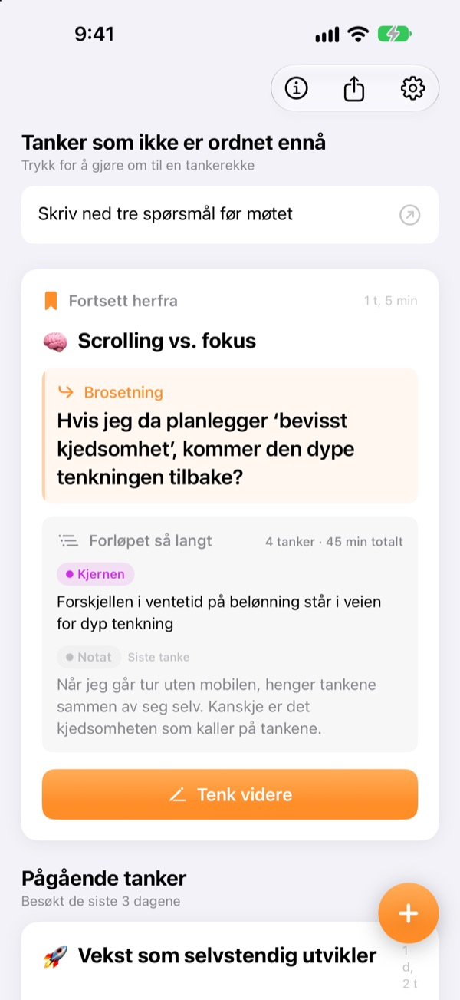
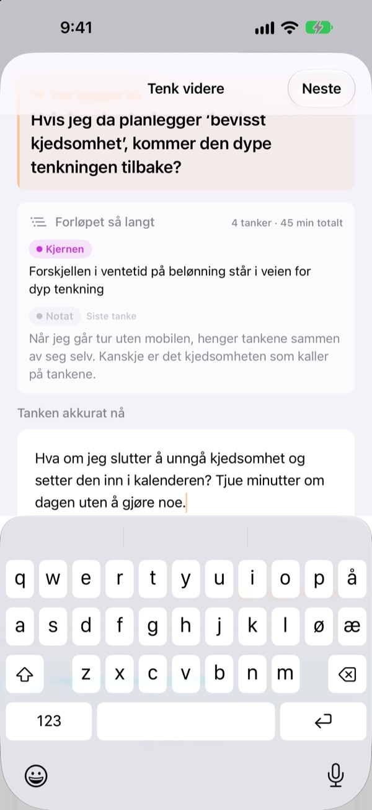
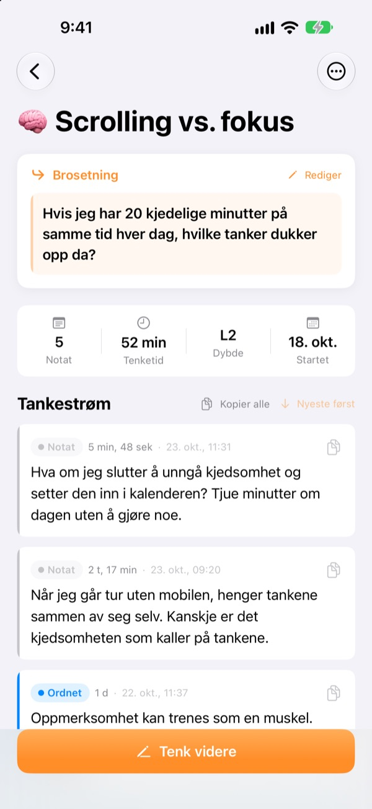
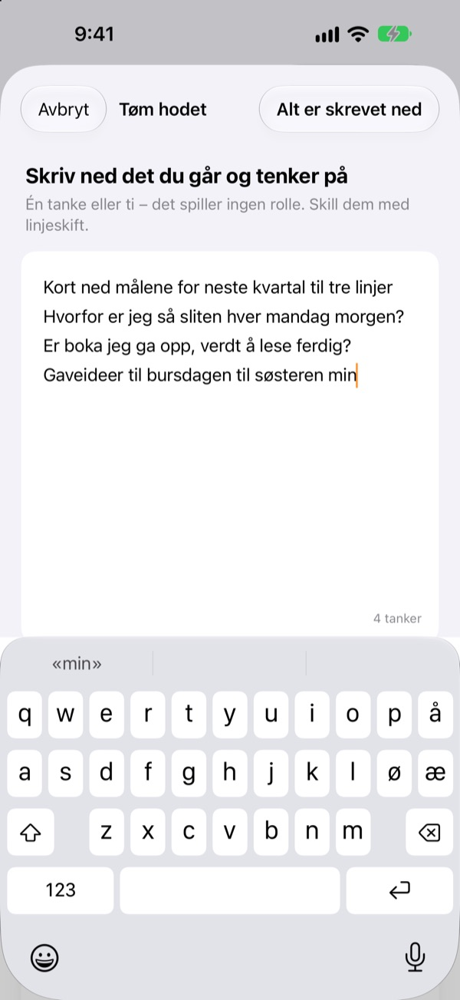

Gårsdagens halvferdige tanke
fortsetter i dag der den slapp
Når du slutter å tenke, legger du igjen én linje å fortsette fra. Neste gang du åpner appen, venter den øverst.
Alle funksjoner er gratis. Ingen konto, alt blir på enheten din.

Prøv å legge igjen en brosetning
Skriv en tanke, og legg igjen setningen du vil fortsette fra neste gang. Det skjer i samme rekkefølge som i appen.
Hvor var jeg nå igjen?
Du åpner et notat fra forrige uke og finner et par konklusjoner, men ikke spørsmålet du skulle se nærmere på etterpå. Så du begynner på nytt. ThinkFlow får deg til å skrive ned det neste spørsmålet når du stopper, så du starter rett der når du kommer tilbake.
Brosetningen venter øverst
Avslutt en tenkeøkt med én linje: spørsmålet du fortsetter med. Når du kommer tilbake, står den setningen, kjernen så langt og siste tanke på ett kort. Du trenger ikke å nøste opp noe.
Du ser den også i en widget på hjemskjermen, og mens du tenker, går tiden på låseskjermen og i Dynamic Island.

Fra notat til kjerne
Løft hver tanke gjennom fire nivåer: notat, ordnet, kjernen og sammendrag. Du ser med et blikk hvor moden den er.
Det du har søkt etter eller spurt om, legges ved som materiale, atskilt fra dine egne tanker.

Tøm hodet først
Skriv ned alt som surrer i hodet, én linje per tanke, og velg den du vil jobbe med nå. Den blir en tråd, resten venter på startskjermen til du trykker på det.
Tanker du ikke har rørt på over tre dager, samles under Tanker å vekke til live.

Kom i gang i tre steg
- 1
Tøm hodet
Én linje per tanke, og velg så den som skal vokse.
- 2
Tenk videre
Legg til hver ny idé for seg, så er den lettere å foredle senere.
- 3
Legg igjen setningen og lukk
Neste gang starter du akkurat der.
Foredlingsnivå
- Notat
- Rå tanke
- Ordnet
- Ordnet én gang
- Kjernen
- Bare kjernen
- Sammendrag
- Endelig sammendrag
Trykk på nivåmerket ved en tanke for å endre det. Kjerne og sammendrag vises først på kortet når du kommer tilbake.
Brosetningen venter øverst
Må jeg skrive en brosetning?
Hvis du har lagt til noe, ja: Skjermen Tenk videre lukkes først når du legger igjen neste linje. Har du ikke skrevet noe, kan du bare lukke den. Trikset er å stoppe mens du fortsatt har noe å si, ikke når du står fast.
Hva er Tanker å vekke til live?
Tråder du ikke har åpnet på over tre dager, samles for seg på startskjermen, så en nesten glemt tanke kan fortsette fra brosetningen sin.
Hvordan melder jeg fra om en feil eller foreslår noe?
Bruk Send tilbakemelding i appens innstillinger, skriv til adressen nedenfor, eller opprett et issue på github.com/M1zz/ThinkFlow/issues. Alt er velkomment.
Er alt virkelig gratis?
Ja. Alle funksjoner er gratis, uten reklame og uten konto. «Støtt utvikleren» i innstillingene er helt frivillig og låser ikke opp noe.
Spørsmål eller innspill? Skriv til leeo@kakao.com.